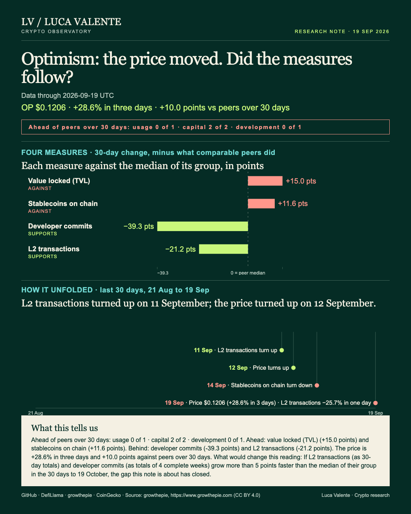
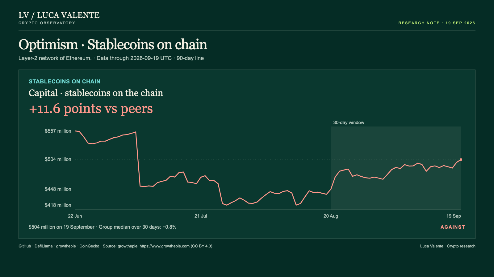
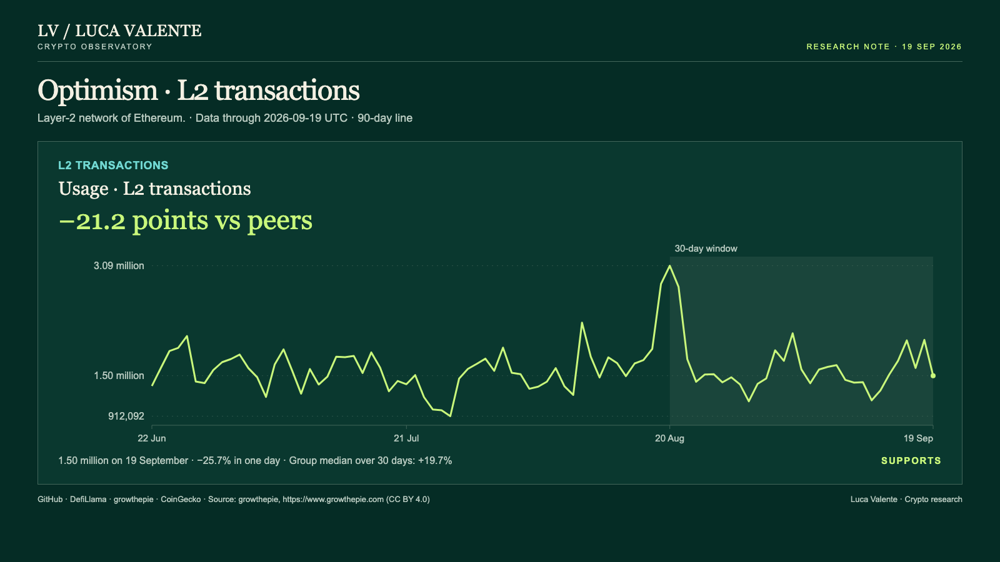

Training note, written on 25 September 2026 from data as of 19 September 2026. Not part of the published series.
OP Beat Its Group While Optimism's Transactions Fell Behind

Over the past month the OP token rose faster than its group, while Optimism's transactions and code work fell behind that same group. Anyone who takes a rising token as a sign of a busier network has a reason to look twice: on Optimism the two are moving apart. Optimism is a separate network that runs on top of Ethereum, one of the so-called layer-2 chains, and OP is its token. Everything below ends on 19 September 2026.
Two of the four bars on the cover point right, and they are the case against this note. Each bar is a line's 30-day change minus the median of Optimism's group, 37 members with Optimism included, counting only those that report the line. Value locked, the dollars deposited in contracts on a network, rose 13.7% at the median of the 30 members that report it, first day against last. Optimism's rose 28.6%, from $362 million on 20 August to $465 million on 19 September, 15.0 points ahead; the last day alone added 4.8%. Being in dollars, the figure can partly reflect the prices of the deposited assets, and over the same 30 days OP rose 34.1%.
Second comes the stablecoin line, the dollar value of stablecoins held on Optimism, which reads the network itself. At the median of the 31 members that report it, the line moved 0.8% in 30 days, again first day against last. Optimism went from $448 million on 20 August to $504 million on 19 September, up 12.4% and 11.6 points ahead, and it fell on 2 of the 5 days after turning down on 14 September. Over the past 90 days the middle half of readings for this gap ran from -14.5 to +10.0 points; today's sits above that band, which says only that it is not ordinary for this line. I have tried to weigh it against the two lines on my side and I do not know which counts for more, a doubt that stays with this note.

L2 transactions, the daily count of transactions recorded on this rollup, are reported by only 8 members of the group. Adding up each 30 days against the 30 before, their median rose 19.7%, while Optimism's total for the 30 days to 19 September slipped to 48 million, from 49 million in the 30 days to 20 August. That is a fall of 1.6% and 21.2 points behind the median, below the band of +5.9 to +17.1 points that held the middle half of the past 90 days. The line turned up on 11 September and rose on 5 of the 8 days after, then fell 25.7% on 19 September alone. That day took it from 2.02 million to 1.50 million, and I do not read one day as a trend.

Code work tells the same story, with one difference that bears on whose problem this is: the group's median fell too. A commit is a change to the code saved in the project's public repositories, and I count them by the week. Comparing four complete weeks with the four before, the median of the 23 members that report commits fell 13.3%, and Optimism fell 52.6%. Its count went from 517 in the four weeks to 15 August to 245 in the four to 12 September, 39.3 points behind the median. Commits turned first, down from the week starting 19 July, and fell in 5 of the 8 weeks after, ending with 39 in the week starting 13 September against 56 the week before.
For the price, the group comes first as well. The median listed token in the group rose 26.3% from 20 August to 19 September, end against start. OP rose 34.1% over the same window, from $0.08993 to $0.1206, or 7.8 points more. From its turn on 12 September the price climbed on 5 of the next 7 days, gaining 28.6% in the last three of them, from $0.09375 on 16 September. The final day added 19.4% and set the highest price of the past 90 days.
Seen group first, the month splits in two. Prices, deposits and transactions rose at the median, stablecoins barely moved, and the median for commits fell, which makes the slower code partly a group matter. What belongs to Optimism alone is the distance: transactions and commits well behind their medians, and a token ahead of its own. I read usage, here transactions only, apart from capital, meaning value locked and stablecoins, and from development, meaning commits, without netting one against another; read that way, the capital objections are real. The claim in this note is about activity. I follow the two lines that describe activity and code. A reader who weighs deposits more will read the month the other way, and this note gives that reader the numbers to do it. There is nothing else to weigh: this note has no fees, no trading volumes, no user or wallet count and no news or reason for any move.
I am giving this reading until 19 October, and if it fails I will write that it failed. If L2 transactions (as 30-day totals) and developer commits (as totals of 4 complete weeks) grow more than 5 points faster than the median of their group in the 30 days to 19 October, the gap this note is about has closed. The test names only transactions and commits, the two lines I describe as trailing the price. If both beat their group by that margin, the split I describe is gone. I would most like to know whether the network's activity reaches the people who hold OP at all, and none of the four lines here can tell me.
Sources: GitHub (developer commits), DefiLlama (value locked, stablecoins), growthepie (L2 transactions), CoinGecko (price). Source: growthepie, https://www.growthepie.com (CC BY 4.0)
Peer group: 37 chains tracked by DefiLlama and growthepie (who they are). 'Net of the group' is the 30-day change minus the group's median.
Not financial advice. This is a research note based on public on-chain data.